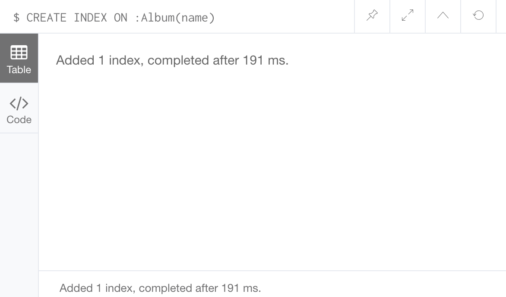
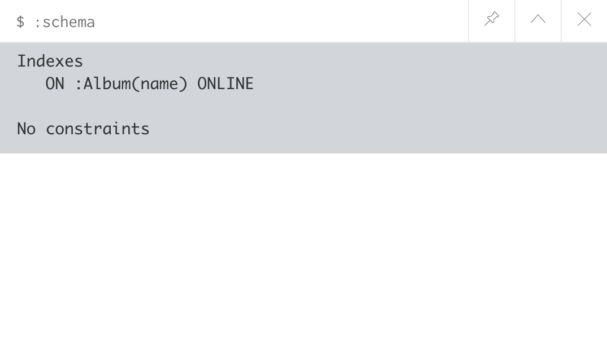

索引是一种数据结构，可以提高数据库数据检索的速度。
在 Neo4j 中，你可以给有标签的点的任何属性创建索引。一旦你创建了一个索引，Neo4j 将会管理它，在数据更新时保持最新的索引。
使用 CREATE INDEX ON 语句创建索引，像下边这样：
|
|
在上边的例子中，我们为所有标签为 Album 的点的 name 属性创建了一个索引。
语句执行成功后，将展示如下信息：

当你创建一个索引时，Neo4j 会在后台进行操作。如果你的数据库很大，可能需要一段时间。只有当 Neo4j 完成索引创建后，这个索引才会被上线并用于查询。
查看索引
索引（约束）成为了数据库模式的一部分。
在 Neo4j 浏览器中，你可以使用 :schema 命令查看所有索引和约束。
来试一试吧：
|
|
你可以看到一个索引和约束的列表：

索引提示
索引创建完成后，当你在执行查询时会自动使用。
然而 Neo4j 也允许你强制提示一个或多个索引，你可以在你的查询语句中使用 USING INDEX ... 创建一个索引提示。
所以上边的示例可以像下边这样强制索引：
|
|
我们也可以使用多个提示，为每个想强制的索引添加一个新的 USING INDEX 即可。
是否有必要索引？
当 Neo4j 创建索引时，它会在数据库中创建冗余的副本，因此使用索引会占用更多的硬盘空间并减慢写入速度。
因此在决定索引哪些数据时你需要进行一些权衡。
一般来说当你知道某些节点数量很多时，创建索引是个不错的主意。或者你发现查询时间太长可以尝试通过添加索引来解决。